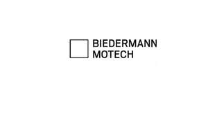

Trade Mark Journal No.2026/008 20 February 2026
UK00004313628 19 December 2025 (5,9,10,16,40,41,42)

International priority date claimed: 30 June 2025
(Germany)
(302025112412.0)
- Class 5
- Bone cement for medical purposes and materials for coating surgical implants.
- Class 9
- Scientific, research, navigation, surveying, photographic, cinematographic, audio-visual, optical, weighing, measuring, signaling, detecting, testing, checking, rescue, and teaching apparatus and instruments; apparatus and instruments for conducting, switching, transforming, accumulating, regulating, or controlling the distribution or use of electricity; Apparatus and instruments for recording, transmitting, reproducing, or processing sound, images, or data; recorded media; downloadable media; computer software; blank digital or analog recording and storage media; computers; Computer peripherals; all of the aforementioned goods, including in connection with computer-assisted medical applications, including in the field of orthopedic surgery, trauma surgery, and neurosurgery.
- Class 10
- Surgical, medical, dental and veterinary apparatus and instruments, including instruments and apparatus for orthopaedic surgery, trauma surgery and neurosurgery; implants for trauma surgery made of the artificial materials; implants for neurosurgery made of the artificial materials; surgical implants comprised of artificial materials; robots for medical applications, including robots for surgical applications; instruments for inserting implants and the handling of implants made of artificial materials, includingfor the insertion of spinal implants made of artificial materials; bone implants made of artificial materials; orthopaedic implants made of artificial materials; spinal implants; medical guidewires; orthopaedic articles; suture materials; instruments for the insertion of bone cement for orthopaedic surgery purposes.
- Class 16
- Teaching and learning materials.
- Class 40
- Custom-manufacture of medical and surgical apparatus and instruments, including custom-manufacture designed to the specific needs of customers, including custom manufacture in the fields of orthopaedic surgery, trauma surgery and neurosurgery; Custom manufacture of surgical implants made of artificial materials, including implants for orthopedic surgery, trauma surgery, and neurosurgery, including bone implants and spinal implants made of artificial materials; Manufacture, including customer-specific manufacture, of special surgical instruments for inserting and handling implants made of artificial materials, of spinal implants and bone implants made of artificial materials; Production of 3D prints, production, including customised production, of 3D print models, including in the field of orthopaedic surgery, trauma surgery and neurosurgery, including of 3D print models for implants and instruments for inserting and handling of implants; Surface finishing, including surface treatment, of implants and instruments in the fields of orthopedic surgery, trauma surgery, and neurosurgery.
- Class 41
- Educational instruction, Training, including providing of training courses and workshops in the field of orthopaedic surgery, trauma surgery and neurosurgery.
- Class 42
- Scientific and technological services and research and design relating thereto, including in the fields of orthopedic surgery, trauma surgery and neurosurgery, including bone implants made of artificial materials; industrial analysis and research services, including in the fields of orthopedic surgery, trauma surgery and neurosurgery, including development of orthopaedic articles made of artificial materials; development of implants made of artificial materials; development of instruments for the insertion and the handling of implants made of artificial materials; engineering services, including in the field of robotics for medical applications; material development in the fields of orthopedic surgery, trauma surgery and neurosurgery, including in the field of bone implants made of artificial materials; material testing, including in fields of orthopedic surgery, trauma surgery and neurosurgery, including in the field of bone implants made of artificial materials; conducting of tests of implants and instruments in the following fields: orthopedic surgery, trauma surgery and neurosurgery; providing of technical advice including relating to orthopedic surgery, trauma surgery and neurosurgery, including in the field of bone implants made of artificial materials; technical project studies, engineering project management services, including in the fields of orthopedic surgery, trauma surgery and neurosurgery, including in the field of bone implants made of artificial materials; quality control, including in the fields of orthopedic surgery, trauma surgery and neurosurgery, including in the field of bone implants made of artificial materials; design and development of computer hardware and software, including in the field of orthopaedic surgery, trauma surgery and neurosurgery, including in the field of development and manufacture and testing of implants and instruments and in the field of computerised medical applications, including for orthopaedic surgery, trauma surgery and neurosurgery; design of 3D models for 3D printing, including in the field of orthopaedic surgery, trauma surgery and neurosurgery, including in the field of development and manufacture and testing of implants and instruments and in the field of computerised medical applications, including for orthopaedic surgery, trauma surgery and neurosurgery.
Biedermann Motech GmbH & Co. KG
Representative: Marks & Clerk LLP